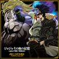

Kazusou Oda

Fiatalkora
Hiroshimában született. Már gyerekkora óta zenét tanult, mivel apja egy zenetanár volt, így a klasszikus zene alapjaival kezdte. Különböző hangszeren tud játszani, mint a Zongora, Trombita és Fuvola.
NO REGRET LIFE
2001 Januárjában megalkotta a No Regret Life bandát. A bandával az egész országban előadtak, és végül is kiadták az első albumukat, a Tomorrow Is Another Day-t 2002-ben.
2005 Februárjában az első nagyobb áttörésüket a Sonic Music kiadónál a "Melody" című lemezükkel tették. Négy hónbappal később kiadták a másodikat, "Lost Words", ami fel lett használva mint a 9. zárózenéje a Naruto-nak.
2011-ben a No Regret Life elhagyta a Sony-t, és megalapították a saját kiadójukat Spiral-Motion néven. Ekkor Oda elkezdett támogatni és kezelni más bandákat is. A rockbanda kiadott 5 teljes albumot, 4 mini-albumot és 7 lemezt mielőtt 2013-ban elváltak volna.
CODA
Oda szólóban debütált "Coda" néven a "BLOODY STREAM" lemezével. A zene, amit Saori Kodama írt és Toshiyuki O'mori komponált, fel lett használva a 2012-es adaptációjában a Jojo's Bizarre Adventure-nek. Az első hétben a BLOODY STREAM-ből több mint 21000 példány lett eladva, ezzel a 4. helyet elérve az Oricon heti albumlistáján.
Coda a későbbiekben előadja a "JoJo Sono Chi no Kioku ~end of THE WORLD" a JO*STARS csapatnév alatt Hiroaki Tominaga és Jin Hashimoto-val.
Ezek után a JO*STARS tagjai egy album-trilógiát alkottak, aminek második részét Coda énekelte, melyekben benne volt a Goodbye Nostalgia, az IGGY WALK, és a Crazy my Beat.
2016 karácsonyán, egy eggyüttműködő változata le lett adva a "Great Days"-nek, melyet a JO*UNITED állnévvel, a legtöbb eddigi a sorozatban lévő énekes szerepelt. Ezt a 4. évad Záróepizódjához használták.
A "FINDING THE TRUTH" című kislemeze a Thus Spoke Kishibe Rohan OVA zárózenéje. Ez volt az első alkalom amikor angolul énekelt.
Coda legutóbbi munkáltsága a "Fighting Gold", az első nyitózenéje a Golden Wind-nek. A CD 2018-ban jelent meg, eléréssel a népszerűbb zeneszolgáltatóknál.
Késő 2019-ben egy bandát alapított a basszusgitáros Ryosuke Tanakával és a dobos Yousuke Omiyával. Ő zongorázott és énekelt. A banda neve "Coda Piano Trio", és akusztik jazz-inspirált átdolgozásokat adnak elő a JJBA-ból. Az első albumuk neve az "ebony & ivory". Ennek az utóalbuma a Coda Piano Trio, ami a sorozat összes zenéjét tartalmazza.
DISZKOGRÁFIA
| Borító | Cím | Művész | Típus |
|---|---|---|---|
| BLOODY STREAM | Coda | Lemez | |
|  | JoJo Sono Chi no Kioku ~end of THE WORLD | JO*STARS | Lemez |
| JJBA: The anthology songs 2 | Coda | Album | |
| Crazy Noisy Bizarre Town | THE DU | Lemez | |
 |
Great Days UNITS ver. | JO*UNITED | Lemez |
| FINDING THE TRUTH | Coda | Lemez | |
| Fighting Gold | Coda | Lemez | |
| ebony & ivory | Coda Piano Trio | Feldolgozás Lemez | |
| Coda Piano Trio | Coda Piano Trio | Feldolgozás Album |